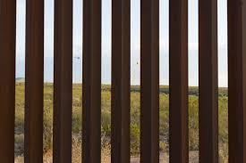

Art for Experiences
The piece I chose is called A Very Long Line that aims at demonstrating how borders are fabricated and dehumanizing constructs. This piece addresses the continual division of Native peoples on their ancestral land – invoking the feeling of both entrapment and alienation. I chose this work because it represents a very interesting, yet widely unpopular perspective of immigration. It is a part of the collection Postcommodity, a collaboration by artists Cristobal Martinez and Kade L. Twist. This art collection functions as a shared Indigenous lens and voice to engage with the assaultive manifestations of the global market. Their work is displayed at the Bockley Gallery in Minneapolis, Minnesota.
View Artist